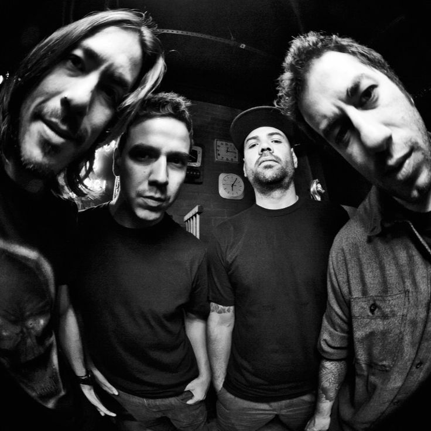
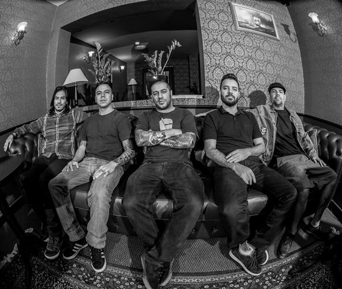
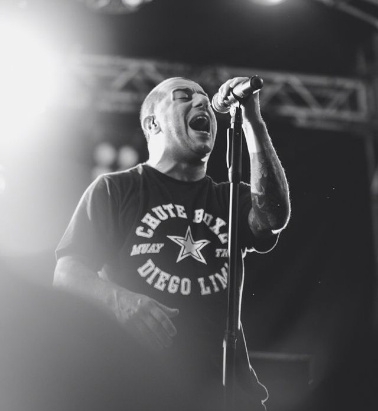

Como surgiu?
O CPM 22 surgiu em 1995, na cidade de Barueri, em São Paulo, a partir da iniciativa de jovens que compartilhavam o interesse pelo punk rock e pelo hardcore. Inicialmente, o grupo utilizava apenas o nome CPM e começou sua trajetória fazendo apresentações em pequenos espaços e divulgando suas primeiras gravações de forma independente. Em 1998, os integrantes criaram uma caixa postal de número 1022, e foi dessa coincidência que surgiu o nome CPM 22, que passou a identificar definitivamente a banda.


História da Carreira
Nos primeiros anos, o CPM 22 conquistou espaço na cena underground, até lançar seu primeiro álbum independente, A Alguns Quilômetros de Lugar Nenhum, em 2000. O reconhecimento nacional começou a crescer nos anos seguintes, especialmente após o lançamento do álbum CPM 22, em 2001, que recebeu Disco de Ouro. Em 2002, o grupo lançou Chegou a Hora de Recomeçar, ampliando ainda mais sua popularidade. Com o passar dos anos, a banda participou de grandes eventos, recebeu premiações e consolidou seu espaço no rock brasileiro. Um dos momentos mais importantes de sua carreira aconteceu em 2008, quando recebeu o Grammy Latino de Melhor Álbum de Rock Brasileiro pelo disco Cidade Cinza. Em 2015, também se apresentou no Rock in Rio, reforçando sua presença entre os grandes nomes do gênero no país.
Curiosidades
Uma curiosidade interessante sobre o CPM 22 é que a banda foi a primeira a se apresentar no Hangar 110, em São Paulo, em outubro de 1998, espaço que se tornou bastante importante para a cena punk rock brasileira. Além disso, antes de alcançar o sucesso nacional, os integrantes divulgavam suas próprias gravações em fitas cassete e vendiam demos durante os shows. O primeiro álbum independente do grupo, A Alguns Quilômetros de Lugar Nenhum, chegou a vender aproximadamente 4 mil cópias em apenas dois meses. Outra conquista marcante foi o reconhecimento internacional, com a vitória no Grammy Latino de 2008.

Perguntas frequentes
Onde está localizada a DARPA Informática?
A DARPA Informática está localizada na Rua Tim Berners-Lee, 1991, Bairro Centro, em Sombrio/SC.
Como posso chegar até a DARPA Informática?
Você pode utilizar o mapa disponível nesta página para consultar a localização e encontrar o melhor caminho até a DARPA Informática.